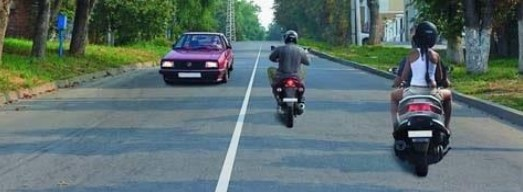
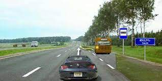
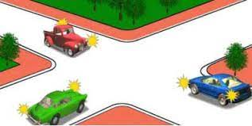
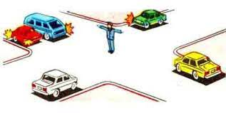
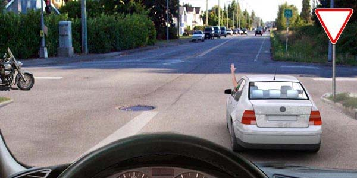
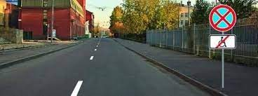
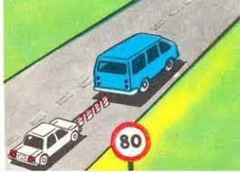
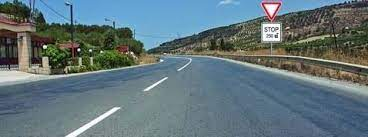
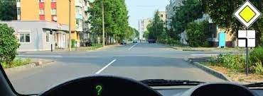
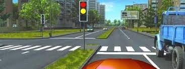

Թեստ 42
30:00
1. «Ճանապարհային երթևեկության անվտանգության ապահովման մասին» ՀՀ օրենքի համաձայն` ազգային վարորդական վկայականները տրվում են`
2. Քանի՞ երթևեկության գոտիի կա այս երթևեկելի մասում

3. Տրանսպորտային միջոցների շահագործումն արգելվում է, եթե՝
4. Տրանսպորտային միջոցների շահագործումն արգելվում է, եթե`
5. Ո՞ր տրանսպորտային միջոցի վարորդն ունի առաջնահերթ երթևեկության իրավունք:

6. Այս ճանապարհային նշանը ցույց է տալիս`
7. Խաչմերուկը վերջինը կանցնի`

8. Ո՞ր տրանսպորտային միջոցներին է թույլատրվում երթևեկությունը:

9. Ինչի՞ մասին է տեղեկացնում թեթև մարդատար ավտոմոբիլի վարորդի կողմից ձեռքով տրված ազդանշանը:

10. Տեսանելիության բացակայության պատճառով հետընթաց կատարելիս վարորդը պետք է
11. Ո՞ր տրանսպորտային միջոցների վրա չի տարածվում կանգառն արգելող նշանի ազդեցությունն այս դեպքում

12. Այս հորիզոնական ճանապարհային գծանշումը ցույց է տալիս`
13. Ինչպիսի՞ առավելագույն արագությամբ կարող է իրականացվել քարշակումը տվյալ պայմաններում:

14. Կարմիր գույնի առկայծող փարոսիկ միացրած, կանգնած վիճակում գտնվող տրանսպորտային միջոցին մոտենալիս` տվյալ ուղղությամբ երթևեկող տրանսպորտային միջոցների վարորդները պետք է`
15. Ի՞նչ է ցույց տալիս լրացուցիչ տեղեկատվության ցուցանակը

16. Երբ վարորդը չի կարող որոշել ճանապարհի ծածկույթի առկայությունը (օրվա մութ ժամանակ, ցեխ, ձյուն և այլն), և բացակայում են առավելության նշանները, ապա
17. Ցանկապատերի ուղղահայաց գծանշումը տեղեկացնում է
18. Ձախ շրջադարձ կատարելիս այս իրավիճակում ազդանշան տալը

19. Կանաչ ազդանշանի միանալուց հետո պարտավոր ենք
